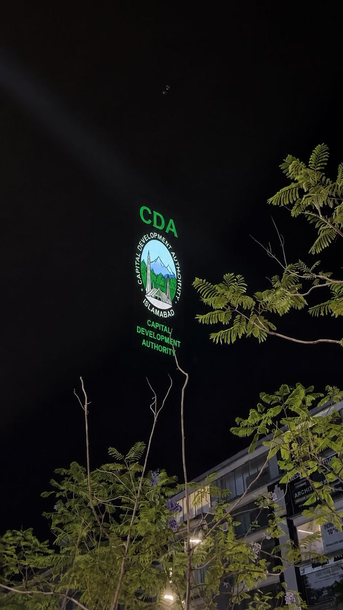

Projection on water screens and fog screens: a planning guide
How projection on water screens and fog screens works, what wind, light and content limits to expect, and a planning checklist before you book.

Most projection happens on something solid: a wall, a dome, a facade. Water screens and fog screens are the exception. Here the surface is a thin sheet of droplets or mist, the picture floats in open air, and people can often walk up to it or even through it. The effect is memorable, which is why clients ask about it for fountains, lakeside events, stage entrances and launches. It is also less forgiving than a wall. This note covers what we explain to a client at AKS before we agree that a water or fog screen is the right choice.
How these screens work
A water screen is a curtain or fan of water droplets, produced by a row of nozzles or by the shape of a fountain. A fog screen is a flat sheet of fine mist held in shape by a controlled airflow, so the mist stays thin and does not billow out like ordinary stage fog. In both cases the droplets scatter some of the projector light back toward the audience, and the rest passes through. That is why the image looks like it is hanging in the air.
The key point is that the surface is mostly empty space. A wall reflects most of the light that reaches it. A mist or water curtain reflects only a small share, so the picture is much dimmer than the same projector would give on a painted surface, and it looks translucent. Everything else in this note follows from that fact.
Where they suit an event, and where they do not
These screens work best when the setting is controlled and dark, and when the audience wants a moment of wonder rather than detailed information. Typical uses include:
- A fountain or pool where the water is already part of the venue, and the show adds light and story to it.
- A walk-through entrance or reveal, where the image appears in a doorway or across a stage.
- A short, bold sequence inside a larger show, such as a logo, a silhouette or a symbol rising out of the dark.
They are a poor fit for long explanatory content, small text, bright daytime venues, or open sites that are always windy. If the main aim is to cover a large building with detailed imagery, a solid surface is the better answer, and our note on choosing between projection mapping and an LED facade helps with that decision. For other light, non-solid options, see our guide to holographic fans and mesh screens.
Wind and weather decide the result
Wind is the biggest risk. Even a light breeze can push a fog sheet out of shape or blow a water curtain sideways, which breaks the picture and soaks whatever is nearby. Indoor venues with still air are the easy case. Outdoors, we ask for the site's typical wind direction, any gaps between buildings that funnel air, and whether the screen can be placed in a sheltered corner. We also plan a fallback, such as a shorter running time, a way to shut the screen down cleanly, or an alternative surface for part of the show. Our general note on weather-proofing outdoor shows applies here too, with the added point that a water screen makes its own spray and humidity.
Temperature and humidity also change how mist behaves, so a test in conditions close to the show is worth much more than a test on a different afternoon.
Light: darkness and brightness
Because the screen reflects little, ambient light is the enemy. Street lamps, signage, stage lighting and even a bright sky can wash the picture out, since any light in the room lifts the dark level behind the image. Ask the venue which lights can be turned off, and which cannot. A dark background behind the screen helps a great deal, because the viewer then sees the picture against black instead of against a bright wall.
The projector choice follows from this. The image needs enough brightness to read against whatever light remains, and the lens must put the picture on a narrow sheet from a practical position. Our guides to projector brightness and lenses and throw ratios explain the choices in detail. We do not quote a single brightness number for these screens, because the right figure depends on the screen type, its thickness, the viewing distance and the ambient light, and it should come from a test on site.
The projector is often placed behind the sheet, or at a shallow angle in front of it, depending on the venue. Each position changes how bright the image looks and what the audience sees of the equipment, so we decide it with the venue layout in hand.
Content for a translucent surface
Content made for a wall will not translate directly. A few rules help:
- Use black as the empty colour. Black adds no light, so the sheet simply disappears where nothing is drawn, and the shapes appear to float.
- Choose bold shapes, strong contrast and saturated colour. Thin lines and small text blur on a soft surface and are hard to read.
- Keep movement smooth and readable. The surface is slightly uneven, so very fast, busy motion tends to turn to noise.
- Expect a soft, slightly grainy picture. It is part of the look, so design with it instead of trying to make it razor sharp.
- Plan for the audience seeing the image from more than one side, since the picture is visible through the sheet. Anything with writing or a logo needs thought about which side reads correctly.
The principles in our colour and contrast note are even more important here, because there is so little margin for weak contrast. We also check the content against the safety points in our guide to flicker and strobe safety.
Safety, water and power
Electrical equipment and water must be kept apart by design, not by luck. Projectors, power distribution and control gear need protection from spray, and cable routes must stay clear of puddles. Pumps and nozzles need their own supply and a reliable way to switch them off. Wet ground is slippery, so audience areas and crew routes need attention, and the water source and drainage must be agreed with the venue. For a fog screen, the venue should confirm that the mist and its fluid, if one is used, are acceptable for the space, and that nobody with a sensitivity is placed right beside it. Our note on power and signal cabling covers the cabling side, and the venue and local authority may have their own requirements, as described in our guide to permissions for public shows.
Checklist before you book a water or fog screen
| Question | Why it matters |
|---|---|
| Is the site indoors, or sheltered from wind? | Wind distorts the sheet and sprays the audience |
| Which lights can be switched off during the show? | Ambient light is the main cause of a washed-out picture |
| What is behind the screen? | A dark backdrop makes the image read clearly |
| Where can the projector stand, in front or behind? | Sets brightness, lens choice and what the audience sees |
| What does the content need to say? | Bold shapes work; text and detail do not |
| Where do water, power and drainage run? | Keeps people and equipment safe |
| Is there a test slot and a fallback plan? | Real conditions decide the result |
Test it before you commit
Whatever the supplier promises, we insist on a test with real content, in conditions close to the show: same time of night, same lighting, same airflow. A bold test clip and a clip with fine detail show quickly what the screen can and cannot carry. If the test disappoints, it is far cheaper to change the plan then than on the day. It is also worth seeing the screen from the worst seat, not only from the best one.
We have worked across large civic and heritage sites, including the Marka-e-Haq monument and the Pakistan Monument, and the habit that carries over to every surface is the same: understand the surface honestly before designing for it. If you are considering a fountain, a walk-through reveal or another floating image for your event, tell us about the venue, the date and the effect you want through the contact section, and we will tell you plainly whether a water or fog screen is the right tool.
Thinking about a water or fog screen?
Tell AKS Creative Studio about the venue, the lighting and the effect you want, and we will advise on what will work.
Start a conversation ↗